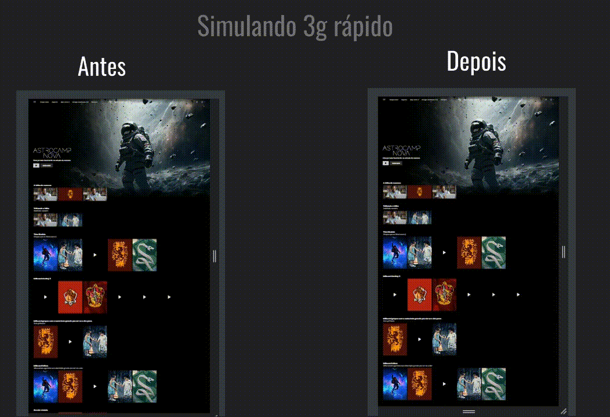
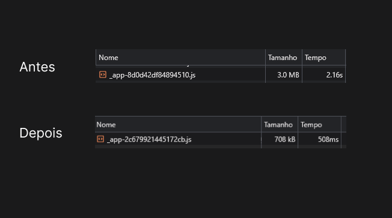
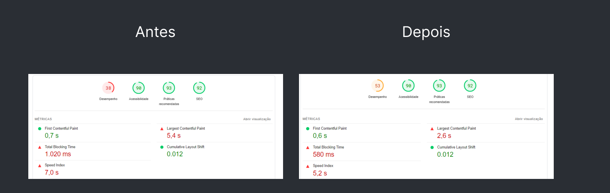

Tree Shaking: redução de bundle e ganho de performance
Performance · Webpack · Bundle · Core Web Vitals
A plataforma acumulava código legado de features descontinuadas e dependências não utilizadas, inflando o bundle principal para 3MB. Com Tree Shaking via Webpack, o bundle caiu para 708kB, o loading em 3G passou de 16s para 6s e a nota de performance no PageSpeed subiu de 38 para 53.
Contexto
Tree Shaking é uma técnica de otimização que remove código não utilizado do bundle final. Pense na aplicação como uma árvore: os galhos são as dependências. Sacudir a árvore elimina os galhos secos: código legado, métodos nunca chamados e imports de features descontinuadas. O resultado é um bundle menor e uma aplicação mais rápida.
A dor
Além de reclamações de usuários sobre lentidão, a plataforma carregava código de features há muito descontinuadas. O bundle principal (_app.page.tsx) havia chegado a 3MB, tornando o loading inicial lento mesmo em boas conexões. Em 3G, o usuário esperava mais de 16 segundos para ver a aplicação.
O que foi feito
Utilizei a configuração nativa de Tree Shaking do Webpack para identificar e eliminar todo código não referenciado no bundle de produção. O foco principal foi o arquivo _app.page.tsx, responsável por renderizar toda a aplicação.


Resultados
O bundle principal caiu de 3MB para 708kB (redução de 76%). O tempo de parse e execução caiu de 2.16s para 508ms. O loading em 3G caiu de 16s para 6s. A nota de Performance no PageSpeed subiu de 38 para 53 e o LCP passou de 5.4s para 2.6s.

Tecnologias
Seu negócio também precisa de resultados?
Vamos conversar